Archive
 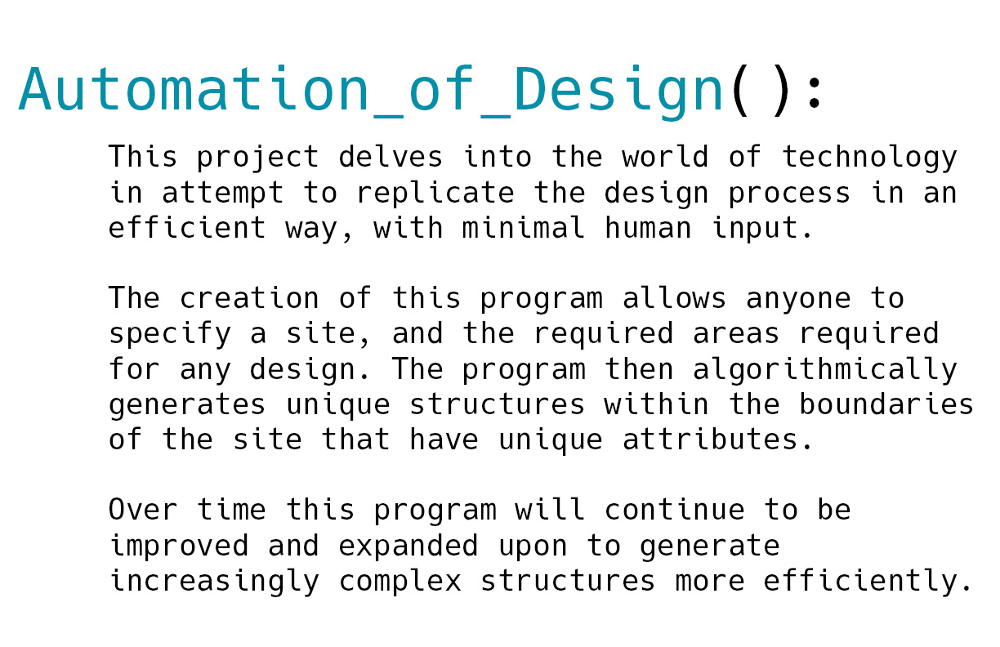
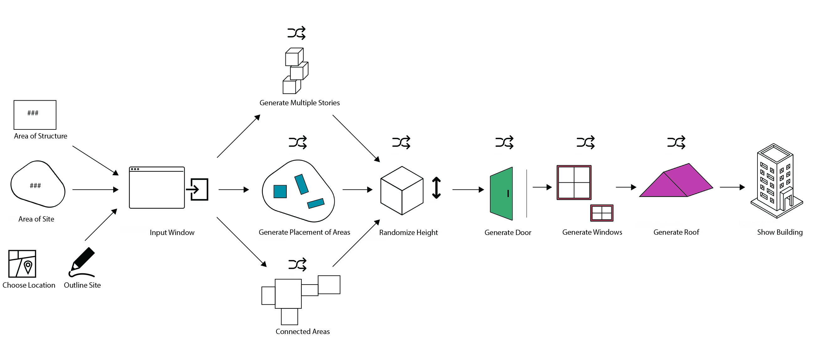
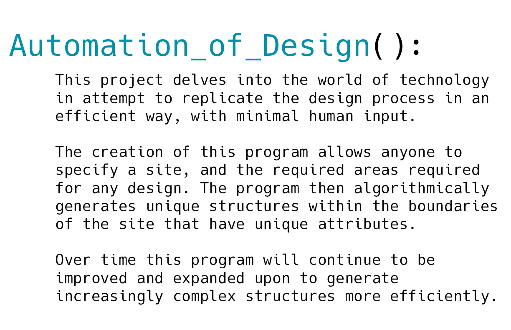
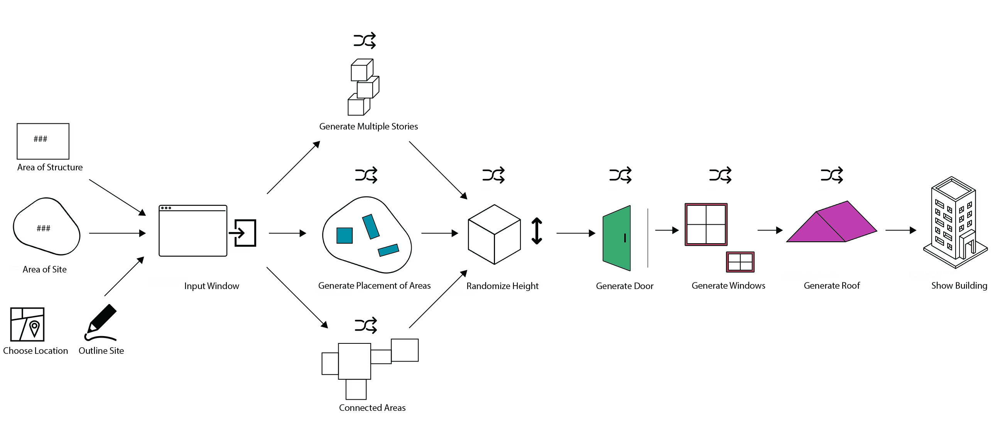
 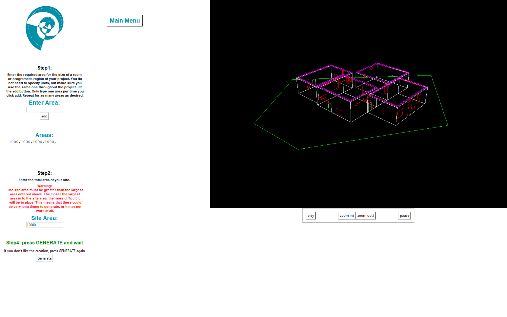
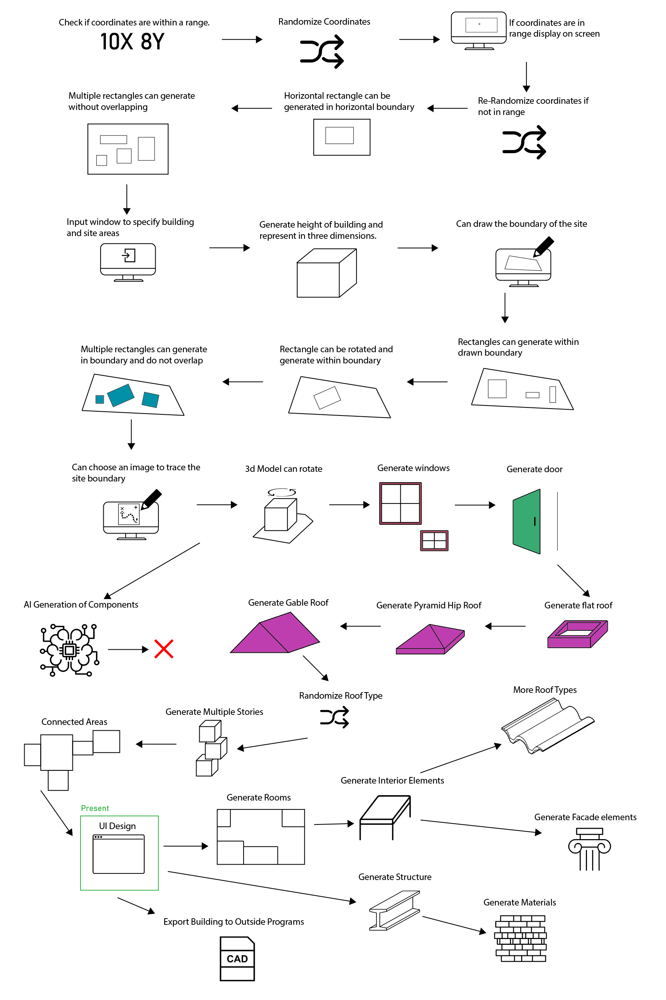
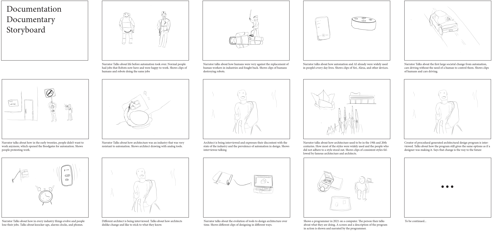
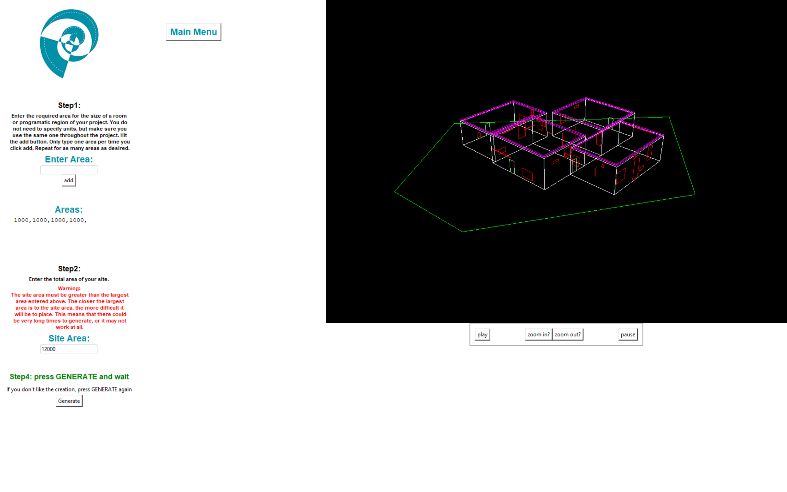
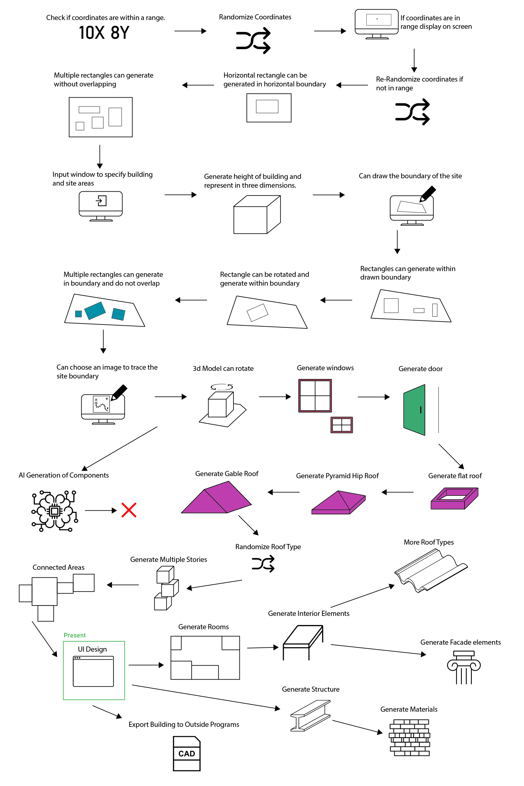
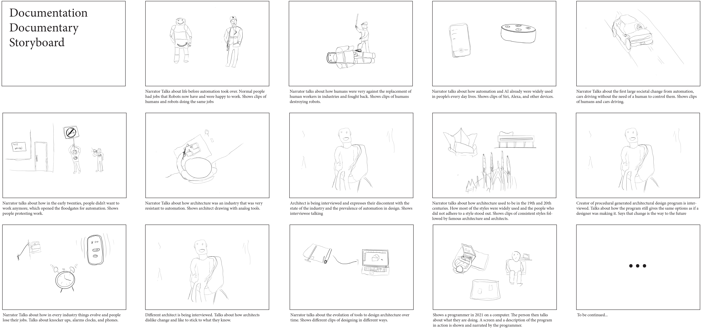
Since the beginning of time, humans have endeavored to improve their lives through technological advancement. The invention of the wheel was paramount in improving how humans can move and what they could carry. With constant developments of new technologies, it led to the creation of the car and eventually the airplane. Similarly, in the field of architecture, humans originally would take shelter in whatever they could find. Eventually, with basic materials, humans were able to make their own shelters. Through constant technological advancements we were able to make cathedrals and eventually skyscrapers. The field of architecture is no stranger to technological advancements, but sometimes it does try to resist the changes. A constant threat in the face of progress is complacency and feeling comfortable with the existing technology. An example of this would be architects who insist on using analog means to create their drawings and designs rather than modern CAD software. Contrary to what the people using them may say, there really is not a benefit to using analog tools over digital ones besides personal preference. If we look towards the future, what is the next step in the technological advancements in the field of architecture? I believe that it is automation. Throughout many industries, people are embracing the use of artificial intelligence and algorithms to make decisions for people, so it seems only natural that the field of architecture would follow suit. For my thesis, I am creating a program that takes the decision making out of the designers hands and puts it into the hands of an algorithm. With this program the designer can input various parameters which will guide the algorithm into procedurally generating a design within seconds. While my program does not create the most advanced designs, I believe it can serve as a proof of concept that, with more time and a larger workforce, there can be programs that can completely and fully design a building in a fraction of a time that it takes humans. There are some companies that are creating tools that implement some of these ideas that I am proposing, it it also seems like they are not willing to take these ideas as far as they can go. How far can it go you may ask? I believe that with the current technological capabilities we could easily create a program that allows anyone to design a building with the click of a button, which would save immense amounts of time in the design process. Another benefit that automated design can have is creating unique designs. Sure, humans can already do this, but humans also embraced the idea of the suburbs which consist of thousands of homes that all look the exact same. With automated design we could have suburbs where every home is unique. If we push the idea even further, we can create a type of modular construction system that we can implement into the software. This could allow for the design and the construction of a structure to occur on the same day which is completely unheard of. As I previously mentioned, companies seem to be afraid to push these concepts far enough and wish for technology like this to only be used as tools for architects. This is completely understandable from a socioeconomic standpoint as it could potentially destroy the entirety of the field of architecture. If the ability to design a structure is given to everyone with access to a computer, why would we need architects? Of course, nobody wants an industry to disappear, but it begs the question, should we avoid innovation to protect the livelihoods of people? As someone who has just spent the last five years studying to become part of this profession, I still believe that we shouldn’t stagnate ourselves in favor of having a career. While it may destroy an industry, there are also many socioeconomic benefits that could come from embracing this technology. Without the need for designers, and a very streamlined construction system, the cost of buildings would go down significantly. Right now, there are not many people who want to design or finance affordable housing. With this system, the only expenses for creating a building would be materials, land and minimal construction. This would allow for homes to be constructed very inexpensively leading to a new surge of affordable housing. If we take it to other countries, less affluent nations would be able to construct new, safe, high-quality buildings. While the decline of designers would be unfortunate, I think that being able to ease the financial burden that comes from creating new buildings would more than make up for it. Automated design is the way of the future, the only question is, are we prepared to embrace it?
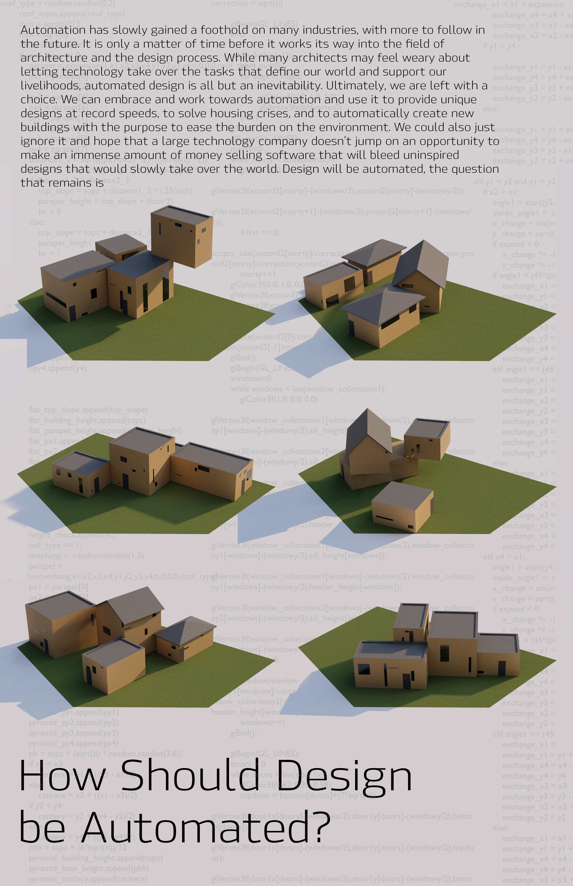